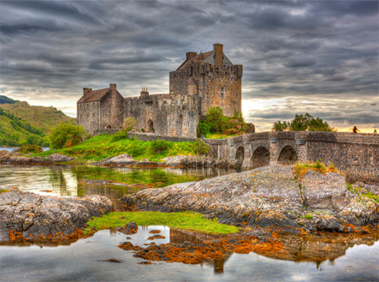

- Elige Escocia como destino -
¿Por qué Escocia?
Escocia (en inglés y escocés: Scotland; en gaélico
escocés: Alba) es la más septentrional de las cuatro
naciones constituyentes del Reino Unido. Junto con
Inglaterra y Gales, forma parte de la isla de Gran Bretaña,
abarcando un tercio de su superficie total; además
consta de más de 790 islas. Limita al norte y oeste con
el océano Atlántico; al este con el mar del Norte, al
sur con Inglaterra y al suroeste con el canal del Norte
y el mar de Irlanda.
Surgido en el siglo XIX, el independentismo escocés
ha ganado influencia desde finales del siglo XX; representado
por el Scottish National Party (SNP, Partido Nacional de
Escocia), que aboga por la independencia de Escocia3
y obtuvo la mayoría absoluta en el Parlamento escocés
en las elecciones de mayo de 2011.

Explora
Sin más ayuda que un mapa y tu cámara de fotos lista, adéntrate en la aventura
donde encontrarás un millar de caminos y senderos naturales para tus escapadas.
Descubre
Cientos de novelas, películas, series... han elegido los paisajes de Escocia donde
la realidad supera a la ficción. Visita el viaducto de Glenfinnan donde el Andén 9/45
continua a día de hoy haciendo.
Siente
Ponte en la piel de un escocés gaélico. Sumérgete en sus costumbres, disfruta
de sus comidas típicas, siente el frío y el olor a naturaleza.
Recuerda
Escocia dispone de un sinfín de atracciones turísticas y parajes naturales que te
dejarán boquiabierto. Y como no, aprovecha el mejor background para tus fotos familiares.
- Siente Escocia -
UNIÓN
Patriotismo
Unión
Sentimiento
Hermandad
TRADICIÓN
Haggis
Neeps
Tatties
Música Celta
ESENCIA
Castillos
Naturaleza
Lagos
Fantasía
RAICES
Highlands
Dialecto
Celta
Religión
- Declaraciones Reales -
Beatriz G
Jose Luis
Fui a visitar a mi hijo
Fui a visitar a mi hijo en la época navideña y no tengo palabras para describir lo maravilloso que es ese país. Alquilamos un coche y nos lanzamos a la aventura, con una pequeña guía turística bajo el brazo.
Estuve un año trabajando en Glasgow
Conseguí una beca para trabajar como auxiliar de idiomas y elegí Escocia. Durante mi estancia pude visitar lugares emblemáticos y preciosos. La gente es maravillosa.